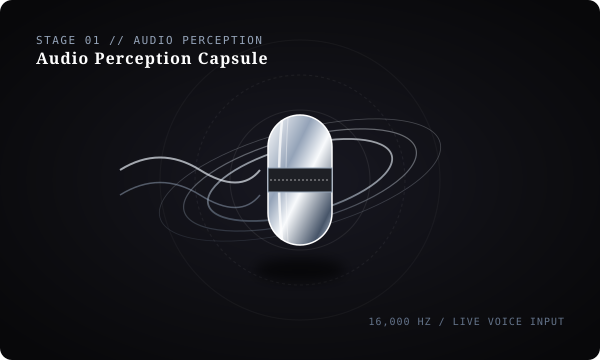

Audio Perception
Speech & Intent Ingestion

Captures speech and conversational questions in real time. When you speak, the acoustic capsule illuminates, transforming voice into clean intent with zero audio buffer lag.
Zero Audio Buffer Delay
Speech & Intent Ingestion
16,000 Hz Input Stream